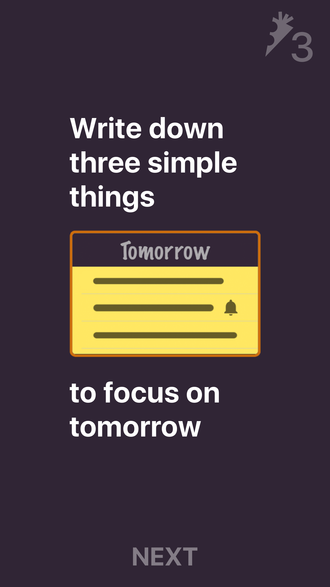
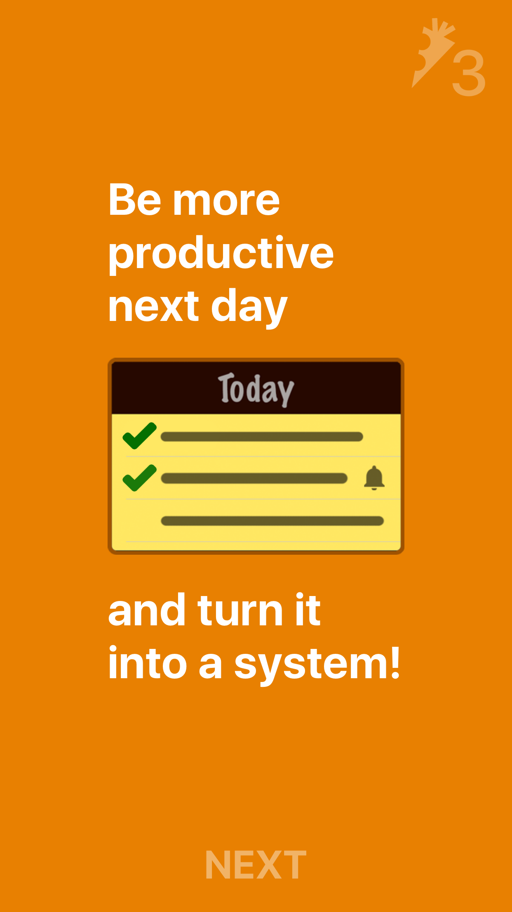
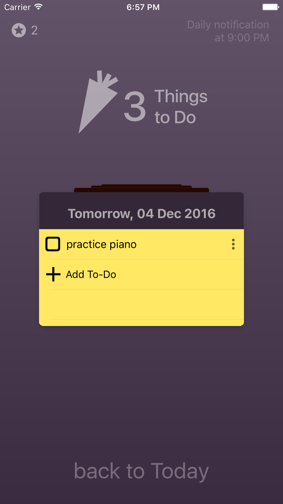

Main features:
- New! Apple Watch app with various complications!
- 3 tasks for every day to focus
- Tomorrow planning page and daily notification
- Reminders
- Sync between all your iOS devices
Price: $0.99 FREE!
(limited time)
Plan your tomorrow!
{kind=link}
Description
How often do you start your day with little direction around what to do?
With "3 Things to Do" you will wake up organized and determined, knowing exactly what to focus on throughout the day. Reduce stress of unknown tomorrow and fall asleep with pleasure!
Why 3 things?
Because usually we end up with lists far too long for us to complete. Prioritize ruthlessly! There is not so much time in a day. Focus on most important and feasible things.
{kind=link}
With "3 Things to Do" it's easy to keep track of your achivements. Just scroll todo cards back in history and be happy about how many things you have already done!
 Share with friends!
Share with friends!
Tell your friends about your productive day by sharing your to-do list screenshot on Twitter or Facebook!
Screenshots
 {kind=link}
{kind=link}

{kind=link}

{kind=link}
{kind=link}
Support
For any questions and suggestions please mail to george.fedoseev@me.com